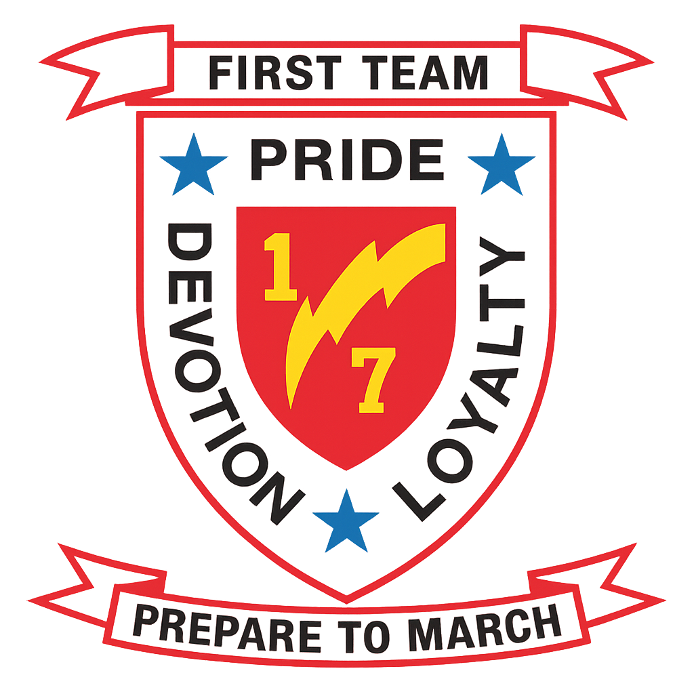

Who I Am
I'm a Marine veteran and systems engineer building at the intersection of IT infrastructure, AI research, game design, and structured thought. By day I build infrastructure that works. By night I build everything else — cognitive AI architectures, tactical card games, digital tools, music, and frameworks for thinking clearly under friction.
Everything I make shares a common thread: structure beneath chaos. Whether it's wrapping a frozen LLM in a memory-augmented cognitive shell, balancing a card game through Monte Carlo simulation, or writing about decision-making under uncertainty, I'm looking for the signal inside the noise.
I don't chase polish for its own sake. I build things that work, test them until they break, and refine what survives. If a system can't hold up under pressure, it wasn't a system — it was a hope.
Military Achievements

Outstanding achievement as Radio Operator, 2d Platoon, Weapons Company, 1st Battalion, 7th Marines, Marine Expeditionary Brigade–Afghanistan, in support of Operation Enduring Freedom. Served as Platoon Radio Operator on eight company and nine battalion operations under strenuous operational tempo, maintaining accountability of $200,000+ in communications equipment while exposed to enemy machinegun, RPG, and IED threats. Required almost no supervision, proving himself a self-starter with unwavering commitment to mission success.
Outstanding performance as Field Radio Operator during Integrated Training Exercise 1-13. Adapted and overcame as the communications expert for the battery without prior tasking. Vast knowledge of setup, use, and troubleshooting of communications equipment maintained constant positive communications with higher and adjacent units during 50+ successful fire missions, directly responsible for the safe, timely, and accurate delivery of 600+ 155mm projectiles.
Outstanding performance as a student in the Field Radio Operator's Course, Class 2012038. Distinguished himself through outstanding performance, placing 1st of 48 students with an aggregate GPA of 93.66%. Demonstrated a level of professionalism not commonly found in Marines of his rank and experience, earning the respect of seniors and subordinates alike through extensive self-study and commitment to excellence.
What I Bring
Level 3 Desktop Support Engineer
CompTIA Network+
CompTIA Security+
Microsoft AZ-900
Microsoft AI-900
Linux Essentials
CompTIA Secure Infrastructure Specialist
AI Research
Game Design
Tool Building
Music Production
Philosophy
Docker · Linux
VS Code · Git
ComfyUI · Flux
Affinity Photo